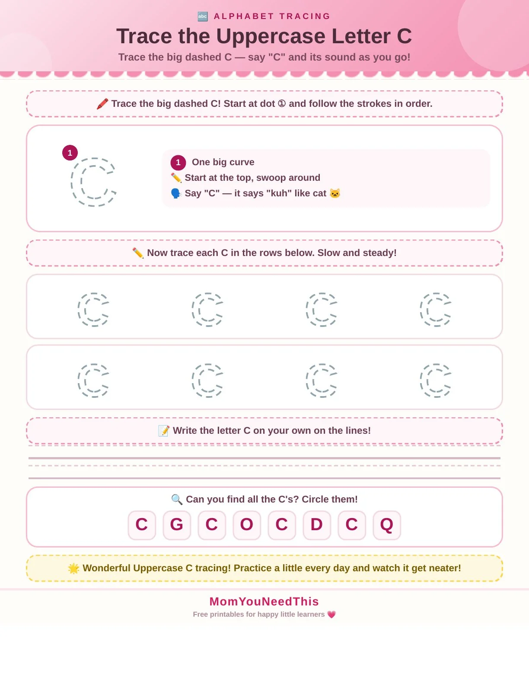

Uppercase Letter C Free Printable Uppercase Letter C Tracing Activity For Kids
Quick Answer
This free printable helps toddlers and preschoolers practice tracing the uppercase letter C — one big open curve, drawn in a single stroke. The worksheet includes large guided tracing lines, directional arrows, and fun practice rows that teach little hands to start at the top, sweep around, and stop before the curve closes. Print as many copies as you need at home, no signup required — tracing that big curve again and again is how little hands build fine motor skills and letter recognition.
Capital C is a kind first letter to master: it is the same open curve as the letter O, just left unfinished. This free printable uppercase letter c tracing worksheet gives toddlers and preschoolers a fun, no-prep way to practice that curve — say the hard C sound from cat and cow as your child traces, print it at home, and learn the letter C through play.
✏️ Trace The Letter C
Use the printable to help your child trace the uppercase letter C, following the arrows around its one big curve. Practice stopping before the ends meet — that little gap is what makes it a C and not an O — and build confidence with early letter formation and writing skills.
Free Uppercase Letter C Tracing Printable

How To Use This Printable
- Download and print the letter C pages on letter-size paper. The print button opens the full-size page in a new tab if you prefer to print from there.
- Say the letter name and sound together before your child starts: “C says /k/, like cat, cow and cup.”
- Trace the curve slowly, starting at the top and sweeping around. Remind your child to stop before the ends meet — a closed C turns into an O.
- Play I-spy with C words around the house — a cup, a car, a cat in a picture book — to lock in the learning.
🔤 All About Capital C
Capital C is one of the friendliest letters to learn, because it is a single open curve — no straight lines, and your pencil never has to lift. Start near the top line, curve up and around to the left, sweep down to the ground line, and stop before the ends meet. That little gap is what makes it a C: if the curve closes, it turns into the letter O.
The letter C makes two sounds. Its hard sound is the /k/ in cat, cake, cow, car and cup — those are good words to say out loud while your child traces each row. C also has a soft sound, the /s/ in city and circle, which shows up when C is followed by e, i or y.
Capital C has special jobs: it starts sentences, and it begins names of people and places — like the C in Canada. Every other letter on this page is the big version, so little hands get plenty of practice with that one big curve.
Why Trace Uppercase Letters?
Uppercase letters are usually the first ones children learn to write, and C is one of the easiest wins: a single curve, with no straight lines and no pencil lifts. Mastering that curve also prepares the hand for the letters built from it — O, G and Q all start with the same sweep. Every sweep of the curve builds fine motor control and early handwriting strength.
🎁 Keep Exploring Free Learning Activities
Discover more printable activities, toddler resources, and learning ideas created for busy parents.
🎁 View All Free Resources❓ Uppercase Letter C Tracing FAQ
Is this uppercase letter C tracing printable really free?
Yes — this uppercase letter C tracing printable is 100% free to download and print at home. No signup and no payment needed. Just tap the download button and print as many copies as you like — little hands learn the C curve by repeating it, so fresh copies for every practice session are a good thing.
What ages is this printable best for?
It is made for toddlers and preschoolers. Capital C suits beginners because it is one single curve, so even a first tracing attempt usually looks like the letter. Little ones can enjoy it with a grown-up’s help, while older preschoolers can work on keeping the curve smooth and the gap open by themselves.
How can we practice the letter C at home?
Say the letter’s name and its hard sound — /k/, like cat — each time your child starts a row, and try the soft sound from city too once the curve feels easy. Hunt for capital C at the start of names and places, like Canada. Keep sessions short and playful — a few each week is plenty.
🔗 More Free Printables You’ll Love
- Free Alphabet Coloring Pages Free printable alphabet coloring pages for little learners.
- Free Lowercase Letter C Tracing Free printable lowercase letter c tracing for little learners.
- Free Uppercase Letter D Tracing Free printable uppercase letter d tracing for little learners.
- Free Uppercase Letter E Tracing Free printable uppercase letter e tracing for little learners.